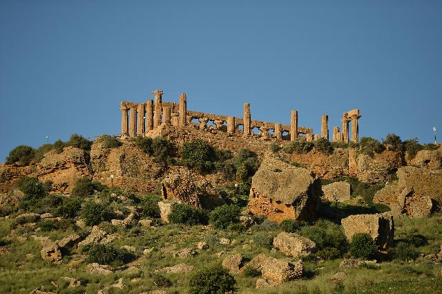

History
Today’s visitors to Greece have the opportunity to trace the “fingerprints” of Greek history from the Paleolithic Era to the Roman Period in the hundreds of archaeological sites, as well as in the archaeological museums and collections that are scattered throughout the country. The first traces of human habitation in Greece appeared during the Paleolithic Age (approx. 120000 - 10000 B.C.). During the Neolithic Age that followed (approx. 7000 - 3000 B.C.), a plethora of Neolithic buildings spread throughout the country. Buildings and cemeteries have been discovered in Thessaly (Sesklo, Dimini), Macedonia, the Peloponnese, etc. The beginning of the Bronze Age (approx. 3000-1100 B.C.) is marked by the appearance of the first urban centers in the Aegean region (Poliochni on Limnos). Flourishing settlements were found on Crete, Mainland Greece, the Cyclades and the Northeastern Aegean, regions where characteristic cultural patterns developed. At the beginning of the 2nd Millennium B.C., organized palatial societies appeared on Minoan Crete, resulting in the development of the first systematic scripts. The Minoans, with Knossos Palace as their epicenter, developed a communications network with races from the Eastern Mediterranean region, adopted certain elements and in turn decisively influenced cultures on the Greek mainland and the islands of the Aegean. On Mainland Greece, the Mycenean Greeks –taking advantage of the destruction caused on Crete by the volcanic eruption on Santorini (around 1500 B.C.)- became the dominant force in the Aegean during the last centuries of the 2nd Millennium B.C.. The Mycenean acropolises (citadels) in Mycenae, Tiryns, Pylos, Thiva, Glas, Athens and Iolcus, then comprised the centers of the bureaucratically organized kingdoms. The extensive destruction of the Mycenean centers around 1200 B.C. led to the decline of the Mycenean civilization and caused the population to migrate to the coastal regions of Asia Minor and Cyprus (1st Greek colonization).
After approximately two centuries of economic and cultural inactivity, which also became known as the Dark Years (1150 - 900 B.C.), the Geometric Period then followed (9th - 8th Century B.C.). This was the beginning of the Greek Renaissance Years. This period was marked by the formation of the Greek City-States, the creation of the Greek alphabet and the composition of the Homeric epics (end of the 8th Century B.C.). The Archaic Years that subsequently followed (7th - 6th Century B.C.) were a period of major social and political changes. The Greek City-States established colonies as far as Spain to the west, the Black Sea to the north and N. Africa to the south (2nd Greek colonization) and laid the foundations for the acme during the Classical Period. The Classical Years (5th - 4th Century B.C.) were characterized by the cultural and political dominance of Athens, so much so that the second half of the 5th Century B.C. was subsequently called the “Golden Age” of Pericles. With the end of the Peloponnesian War in 404 B.C., Athens lost its leading role. New forces emerged during the 4th Century B.C. The Macedonians, with Philip II and his son Alexander the Great, began to play a leading role in Greece. Alexander’s campaign to the East and the conquest of all the regions as far as the Indus River radically changed the situation in the world, as it was at that time.
- Temple of Hera
After the death of Alexander, the vast empire he had created was then divided among his generals, leading to the creation of the kingdoms that would prevail during the Hellenistic Period (3rd - 1st Century B.C.). In this period the Greek City-States remained more or less autonomous, but lost much of their old power and prestige. The appearance of the Romans on the scene and the final conquest of Greece in 146 B.C. forced the country to join the vast Roman Empire. During the Roman occupation period (1st Century B.C. - 3rd Century A.D.), most of the Roman emperors, who admired Greek culture, acted as benefactors to the Greek cities, and especially Athens. Christianity, the new religion that would depose Dodekatheon worshipping, then spread all over Greece through the travels of Apostle Paul during the 1st Century A.D. The decision by Constantine the Great to move the capital of the empire from Rome to Constantinople (324 A.D.), shifted the focus of attention to the eastern part of the empire. This shift marked the beginning of the Byzantine Years, during which Greece became part of the Byzantine Empire. After 1204, when Constantinople was taken by Western crusaders, parts of Greece was apportioned out to western leaders, while the Venetians occupied strategic positions in the Aegean (islands or coastal cities), in order to control the trade routes. The reoccupation of Constantinople by the Byzantines in 1262 marked the last stages of the empire’s existence. The Ottomans gradually began to seize parts of the empire from the 14th Century A.D., and completed the breakup of the empire with the capture of Constantinople in 1453. Crete was the final area of Greece that was occupied by the Ottomans in 1669. Around four centuries of Ottoman domination then followed, up to the beginning of the Greek War of Independence in 1821. Numerous monuments from the Byzantine Years and the Ottoman Occupation Period have been preserved, such as Byzantine and Post-Byzantine churches and monasteries, Ottoman buildings, charming Byzantine and Frankish castles, various other monuments as well as traditional settlements, quite a few of which retain their Ottoman and partly Byzantine structure. The result of the Greek War of Independence was the creation of an independent Greek Kingdom in 1830, but with limited sovereign land. During the 19th C. and the beginning of the 20th C., new areas with compact Greek populations were gradually inducted into the Greek State. Greece’s sovereign land would reach its maximum after the end of Word War I in 1920, with the substantial contribution of then Prime Minister Eleftherios Venizelos. The Greek State took its current form after the end of World War II with the incorporation of the Dodecanese Islands. In 1974, after the seven-year dictatorship period a referendum was held and the government changed from a Constitutional Monarchy to a Presidential Parliamentary Democracy, and in 1981 Greece became a member of the European Union.